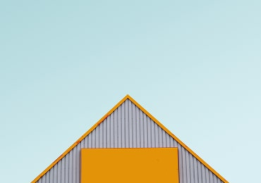

Manifest is a newborn theme. Clean, simple and fast.
Blog
Technology, Interface Design
Using UX Design to Build a Sustainable Future
6 May, 2020
Transformation has to be driven by everybody, not just by climate groups, and we have a
responsibility
to use our influence to drive this. 
Technology, Interface Design
Using UX Design to Build a Sustainable Future
6 May, 2020
Transformation has to be driven by everybody, not just by climate groups, and we have a
responsibility
to use our influence to drive this. 

Latest Posts
View All-
Interface Design8 June, 2020
UX traffic light colours
UI has to make a huge visual difference between warning, an alert and a success.
-
 Technology6 May, 2020
Technology6 May, 2020Using UX Design to Build a Sustainable Future
UI has to make a huge visual difference between warning, an alert and a success.
-
Visual Design8 June, 2020
Creativity vs. UX
Is it possible to create a delightful user experience without following best UX practices?